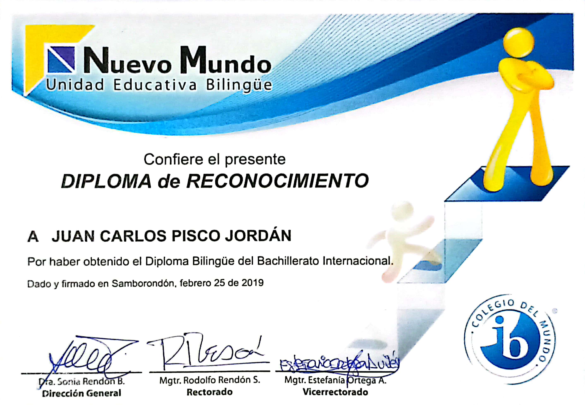
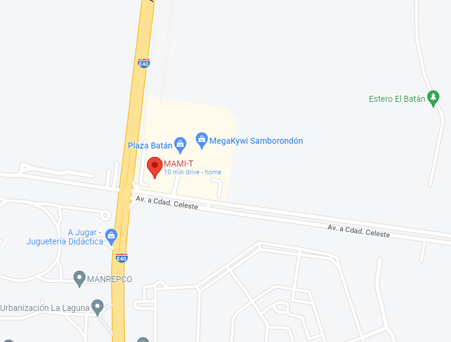

Diplomas y cosas
| Diploma | Foto |
|---|---|
| Bachillerato Internacional |  |
| Cisco |  |
| Escuela del comic |  |
| Doctorado | Acá se pondra el doctorado cuando Pisco lo consiga :P |
Idiomas que Pisco conoce en orden descendente de dominio:
- Python
- Java
- HTML+CSS
- C
- R
- Español
- Inglés
- MySql
- COBOL (mentira)
- JavaScript (en proceso)
- Matlab(?)
- Brainfuck (¿Quién usa eso?)
Su restaurante favorito:
(por si desea invitarlo a comer 7w7)
Si desea que Pisco se contacte con usted directamente, deje sus datos aquí:
Correo:
Número telefónico:
Permitir a Pisco vender su información a empresas publicitarias talibanes.